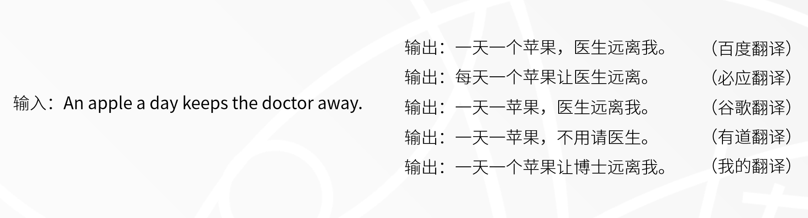
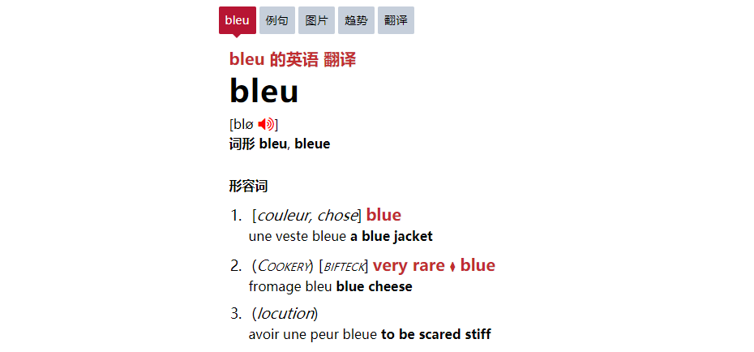
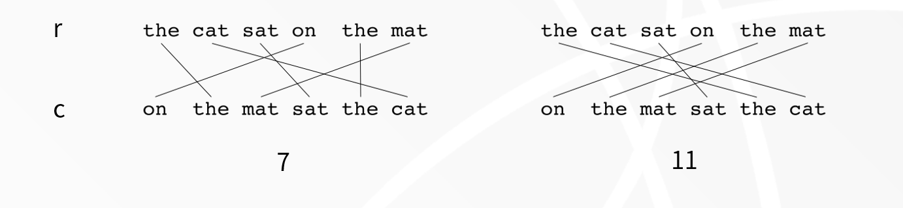
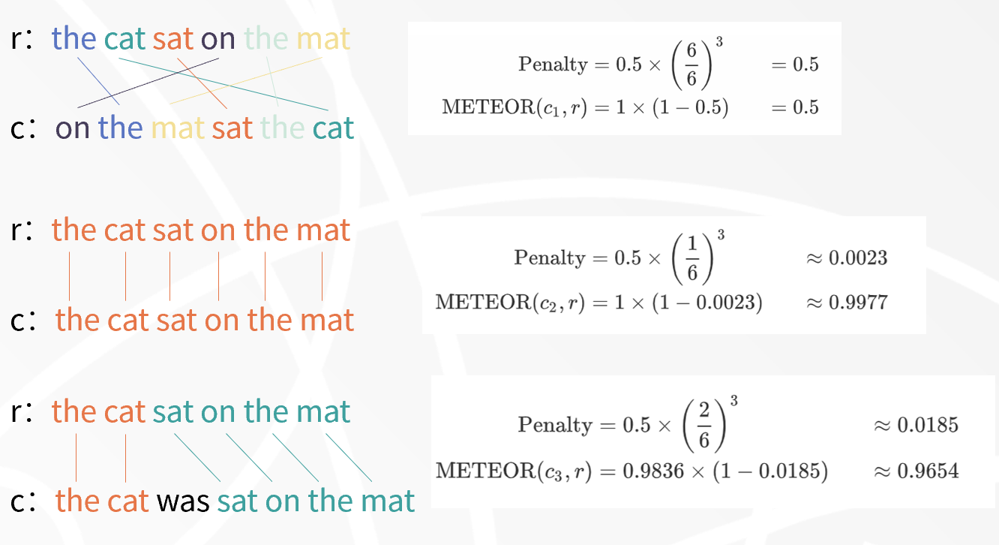
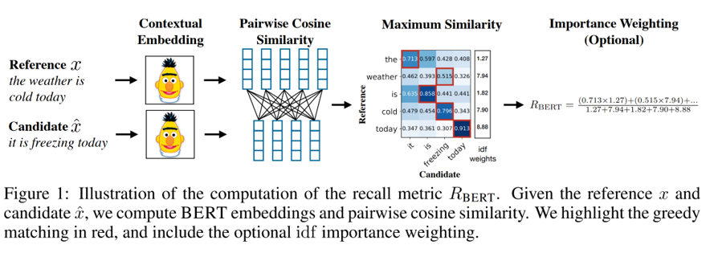
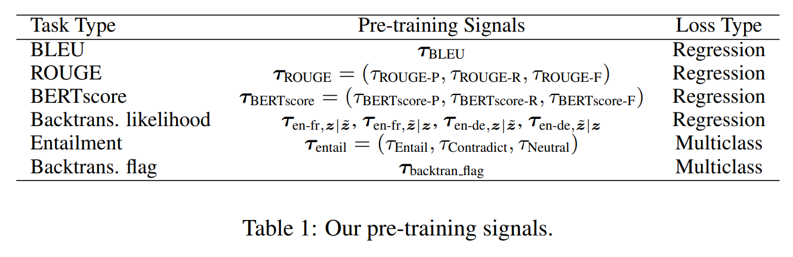

2021s12-机器翻译的自动评估
本文最后更新于：2022年7月13日 中午
（把每双周周报在BLOG上整理一下，以防止自己做的PPT最后都想不起来是在说什么。）
这次周报的题目非常的别扭，可能是我翻译的不太好。英文的话应该是 Automatic Evaluation of Machine Translation ，也就是对机器翻译的结果给出一个自动的评价或者评分，用来对比哪一个机器翻译模型的性能更好。当然，自动也是题目中非常重要的一部分。基于人工的评价自然无法应付现在大规模的评估需求。
机器翻译是指实现一种语言到另一种语言的自动翻译。[1] 该系统的输入是语言 A 的一个文本段落。输出是语言 B 的段落。这两个段落都是不定长的文本序列。对于同一句话可能存在多种合理的翻译，也可能存在明显不合理的翻译。例如下图中的最后一个翻译，把 docter 错翻译成博士，显然是不符合原义的。
（阿米娅：博士，您还有许多事情需要处理。现在还不能休息哦。）

那么在这么多翻译中，如何评价它们，得出一个更好的翻译呢？这就需要对翻译进行评估，或者称评价。对于如何做好翻译，有大家耳熟能详的严复提出的提出译事三大难：信、达、雅。在 Hovy 等人的论文[2]中也提出了类似的观点：好的翻译要追求充分性（adequacy）、准确性（fidelity）和流畅性（fluency）。例如在上面的句子中，除了我的翻译无法做到正确之外，有道的翻译则更加流畅，可以认为在这句话上的翻译更好。
上述需要人类参与、使用人类对语言的理解的评估可以成为人工评估，相对的如果可以计算地得出评估结果，这种可以称为自动评估。显然，人工评估不仅费时费力，而且为了弥补人类的不客观性，需要采纳大量人类的结果，显然无法为现今大规模的翻译模型测试提供帮助。由此对自动评估的期望越来越高。对于一个自动评估方案来讲，其通常需要引入由人类提供的正确答案（Ground Truth / Reference）。对模型输出的候选结果（Candidate）与正确答案进行可重复性的计算，为每个候选结果提供一个表示其翻译质量的分数。自动评估不仅成本低、速度快，而且可以重复，为翻译模型间相互比较提供了可能。
传统自动评估方法
BLEU（The Bilingual Evaluation Understudy）
BLEU[3] 是比较经典的自动评估方法。这个词和蓝色（BLUE）比较像，但看在原论文特意把这四个字母写成蓝色，我觉得读音应该一致。此外经过搜索，BLEU在法语里就是蓝色的意思。

BLEU主要分为两部分：n元准确度修改版（Modified $n$-gram precision）、简短惩罚系数（Brevity Penalty）。下面以一个候选句c和多个参考句R为输入。
修改的n元准确度
该公式计算的是准确率（相对于召回率），统计的是候选句$c$中出现在句子$R$中的$n$-gram数量占候选句$c$中所有$n$-gram数量的比例。但与普通的准确率不同的是，BLEU对分子部分进行裁切，使同一个n-gram的匹配数量得到限制。先看公式。
其中：
该公式说明的是每一个$n$-gram，都不能超过参考句中匹配数量最大的一项。这样说很抽象，以下面的例子作为参考。
我们计算这个例子的1元准确度。可以发现 the 在参考句 1 和参考句 2 中分别出现了 2 次和 1 次。那么 $1$-gram 在其中的最大匹配数为 2. 因此最终的1元准确率为 $\frac{2}{7}$.
简短惩罚系数
上述准确度的不足显然是：如果候选句$c$过短，且其中$n$-gram完全匹配，那么这个候选句的准确度为满分。为了对这样的候选句进行惩罚，引入简短惩罚系数。
其中：
关于候选句的参考，有两种方案。上面公式给出的是 IBM 方案，即选择与候选句长度差距最小的一个参考句。当候选句小于参考句时，惩罚系数会逐渐降低。
最终 BLEU 评分将两部分相乘得到。
其中：
右侧的求和式意为对多个不同大小的$n$-gram取平均。
BLEU的缺点
- 缺少对召回率的考量。虽然用惩罚系数的方式进行了弥补，但采用准确率和召回率的调和平均值分数显然更具优势。
- 对仅含有一个参考句的数据集效果较差。若只含有一个参考句，则削弱了 BLEU 的性能。
- 缺少对同义词的考量。BLEU 仅通过完全匹配的方式给出得分，包容度更低。
METEOR （Metric for Evaluation of Translation with Explicit Ordering）
METEOR[4] 是一个基于对齐的一种评分方法，在一定程度上弥补了 BLEU 的不足。但该评分方法较为复杂，还需要引用外界知识。毕竟要考量同义词的话，外界知识是必不可少的。下面以一个候选句$c$和一个参考句$r$为输入。
对齐（Alignment）
对齐，或者说连线？意在将候选句与参考句中的n-gram对应起来，对应的越多则越接近。
对齐也分为两步：映射和选择。
映射（Mapping）
- 精确模式（exact）：要求词与词之间完全对应，不允许词形变化。例如 computer 只能与 computer 形成映射。
- 词根模式（porter stem）：两个词的词根相同也允许建立映射，需要使用一些外部的词根化工具。例如 computer - compters.
- 同义词模式（WN synonymy）：两个词的意思相同即可，需要使用一些外部的同义词词表。例如：computer - PC.
选用上述的某一个规则，在候选句与参考句中间构成映射。映射可以不完全覆盖候选句或参考句中的所有n-gram。但实际上仅满足上述规则的的话，会存在多个满足条件的映射。因此需要对映射进行选择。
选择（Select）
- 选择已匹配条目最多的映射（the largest subset）
- 选择交叉最少的映射（the least number of crosses）
根据上述的全部规则，就可以选择出最佳映射了。关于交叉这一概念，论文中进行了形式化表达。我们可以简单理解为两条映射所对应的词出现顺序相反。若画成词与词链接的图，可以发现两条线段有一个交点。

我们以上图[5]为例，r为参考句，c为候选句。左图的交叉数为7，右图为11. 因此选择左图的映射方法。
原论文中，以上的两步将会循环进行三次。其中映射规则分别使用精确模式、词根模式、同义词模式。每一轮尝试对未被映射的词构建映射。这三种映射规则逐渐宽松，也更容易将所有存在可能的词映射起来，为下一步的计算提供可能。
计算（Compute）
计算部分也分为两部分：F均值与惩罚系数。其中的惩罚系数比较复杂，而 F均值较好理解。
F均值（Fmean）
F均值是在判断分类任务中很常用的指标，综合考量了准确率与召回率。这里使用了召回率权重很高的F均值。
其中：
准确率的分母为候选句的n-gram数量，召回率的分母是参考句的n-gram数量。
惩罚系数（Penalty）
这里的惩罚系数是为了评价前面对齐的情况。即使候选句中所有单词都来自于参考句，F评分为1，但顺序与参考句完全不一致，也无法获得高分数。
其中分子位置的$\text{chunks}$表示在候选句$c$和参考句$r$中都连续的块数。分母部分是最终匹配的n-gram数。将两部分结合到一起就为METEOR分数。用下面的例子[6]解释惩罚系数的作用。

比较示例1与示例2，虽然它们的F均值均为1，但示例2对齐的更好，所以块数较少，惩罚系数更小。
最终的METEOR分数为下式。
基于预训练的自动评估方法
还有一类方法就是基于预训练的自动评估方法，其思路主要利用BERT的综合分析文本上下文的能力，从而完成对翻译的自动评估。但多少有一种用规则内的东西证明规则内的东西，多少是有极限的感觉。
BERTScore
BERTScore[7] 顾名思义是一个基于 BERT 的自动评估方法。其出发点为让候选句和参考句中的每一个词，分别携带其上下文信息。由此得到的词向量再进行相似度计算，得到最终分数。从方法上讲，属于基于词向量的自动评估方法。只不过这里的词向量信息更加丰富。

BERTScore中也使用了F均值，其召回率和准确率定义如下。
BLEURT（Bilingual Evaluation Understudy with Representations from Transformers）
这个模型[8]在结构上更加简单粗暴，但该方法的重点在于训练这个 BERT 模型。该模型将候选句和参考句直接输入进 BERT，在 [CLS] 位置的输出上添加一个全连接层得到分数。

训练任务如下：
- BLEU：输入为Wikipedia的句子对，直接拟合BLEU的分数。
- ROUGE：输入为Wikipedia的句子对，直接拟合ROUGE的分数。
- BERTScore：输入为Wikipedia的句子对，直接拟合BERTScore的分数。
(用BERT拟合BERT) - 回译似然度：概括来说就是产生回译数据，将Transformers的损失作为评分，然后拟合这个分数。
(用BERT拟合Transformers) - 包含关系：使用包含关系数据集训练分类任务。
- 回译标签：判断数据是否是由回译产生的。
总的来说这篇文章定义了一堆关于翻译度量的预训练任务。
结语
翻译的自动评估原本以为会是一个比较偏向语言学和数学的领域，但也好像理所当然的走到了预训练模型这条路上。虽然说这些复杂的自动评估方法性能很好，但在各种机器翻译论文中 BLEU 依旧在使用。可能还是因为 BLEU 虽然性能一般，但也比较方便。外加机器翻译论文通常使用多个指标同时比较，某一个指标的性能有倾向性，多个指标放在一起也就没有太多影响了。
END
- 1.宗成庆. 统计自然语言处理[M]. 清华大学出版社, 2013. ↩
- 2.Hovy E H . Toward Finely Differentiated Evaluation Metrics for Machine Translation[J]. proceedings of the eagles workshop on standards & evaluation.pisa italy.international standards for language engineering, 1999. ↩
- 3.Papineni S . Blue ; A method for Automatic Evaluation of Machine Translation[C]// Meeting of the Association for Computational Linguistics. Association for Computational Linguistics, 2002. ↩
- 4.Satanjeev B . METEOR: An Automatic Metric for MT Evaluation with Improved Correlation with Human Judgments[J]. ACL-2005, 2005:228-231. ↩
- 5.Wikipedia ↩
- 6.Wikipedia contributors.METEOR[DB/OL].https://en.wikipedia.org/w/index.php?title=METEOR&oldid=962913935,2020-6-16. ↩
- 7.Zhang T , Kishore V , Wu F , et al. BERTScore: Evaluating Text Generation with BERT[J]. 2019. ↩
- 8.Sellam T , Das D , Parikh A P . BLEURT: Learning Robust Metrics for Text Generation[J]. Proceedings of the 58th Annual Meeting of the Association for Computational Linguistics, 2020. ↩